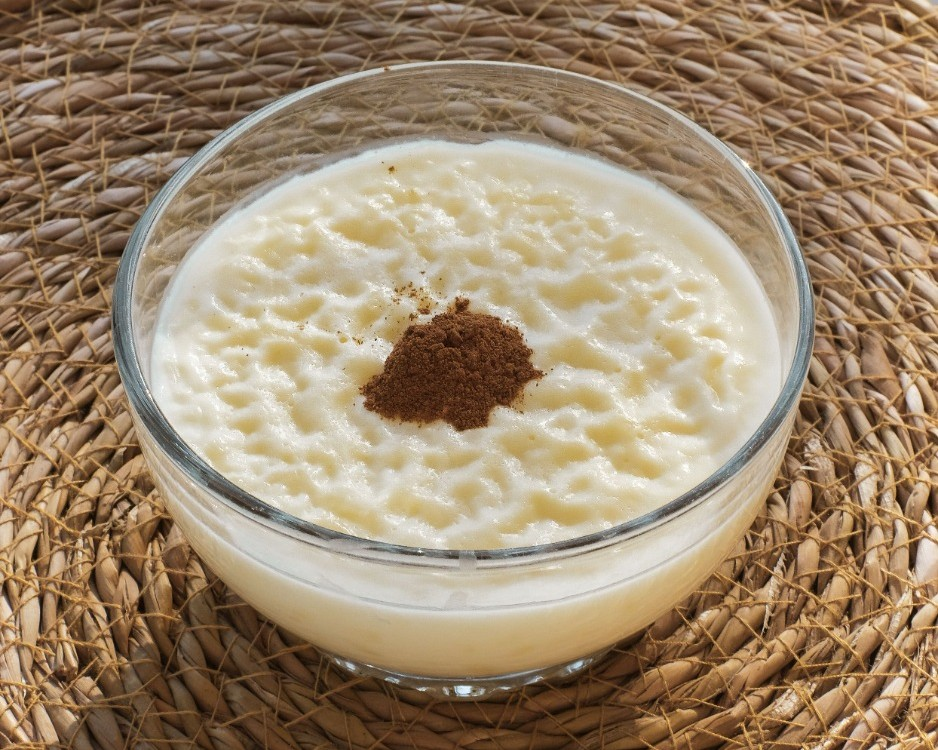
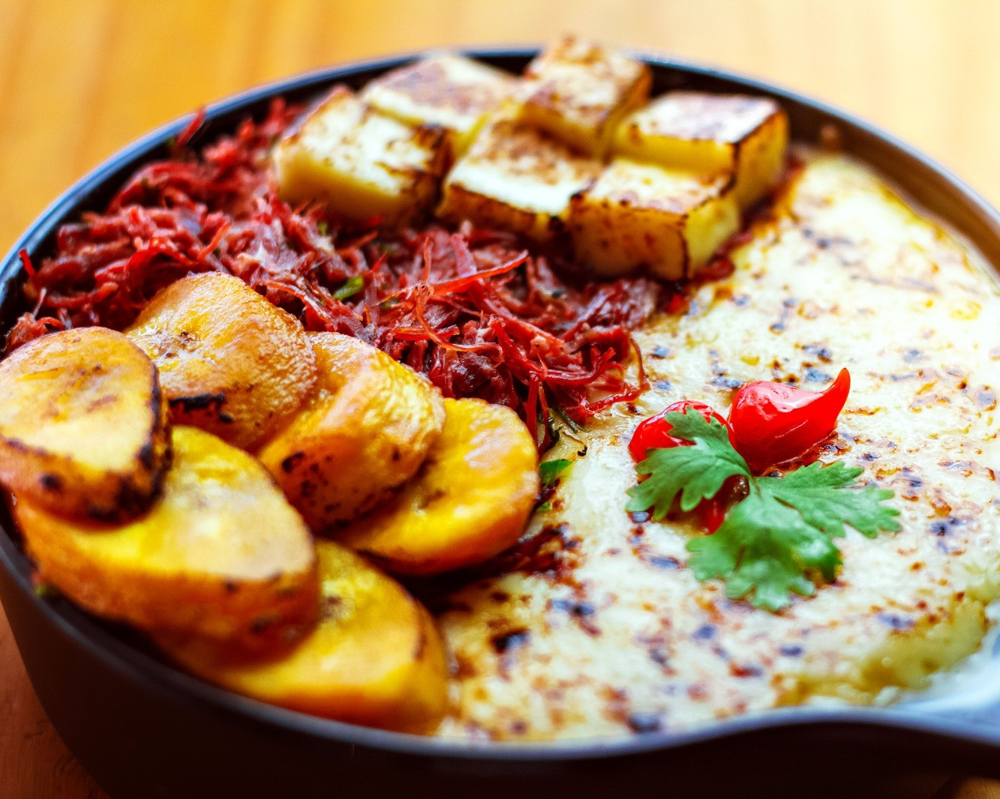
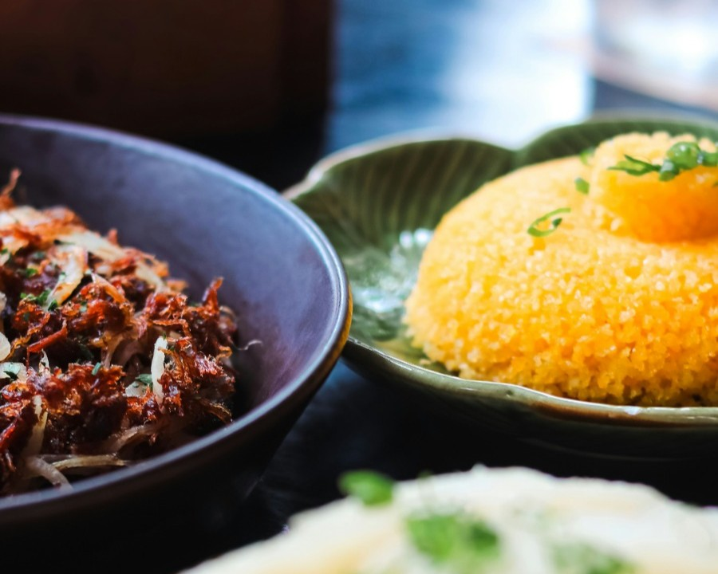
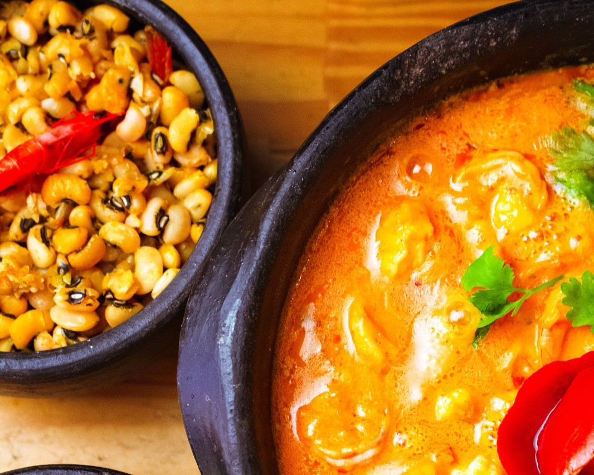

TRADIÇÃO E SABOR
O verdadeiro gosto de Pernambuco em cada prato.
Aqui, a culinária pernambucana ganha vida com receitas tradicionais, ingredientes frescos e muito carinho em cada detalhe.
Conheça nossas comidasSOBRE NÓS
Mais que um restaurante, um pedaço de Pernambuco.
Somos um restaurante dedicado a levar o melhor da culinária pernambucana para você. Nossa missão é preservar a tradição, valorizar os sabores regionais e proporcionar uma experiência única, com pratos feitos de forma artesanal e ingredientes selecionados.
Saiba mais sobre nósNOSSAS COMIDAS
Sabores que contam histórias

Arroz Doce
Arroz doce cremoso com canela.

Carne seca com puré de mandioca
Carne seca, puré, banana, queijo.

Cuscuz
Cuscuz, carne seca e puré.

Bobó de camarão
Camarão cremoso com feijão fradinho.
ENTRE EM CONTATO
Será um prazer te atender
Tire suas dúvidas, faça sua reserva ou venha nos fazer uma visita.
Fale conosco- Telefone: (81) 9xxxx-xxxx
- Email: contato@sabordosertao.com.br
- Instagram: @sabordosertao